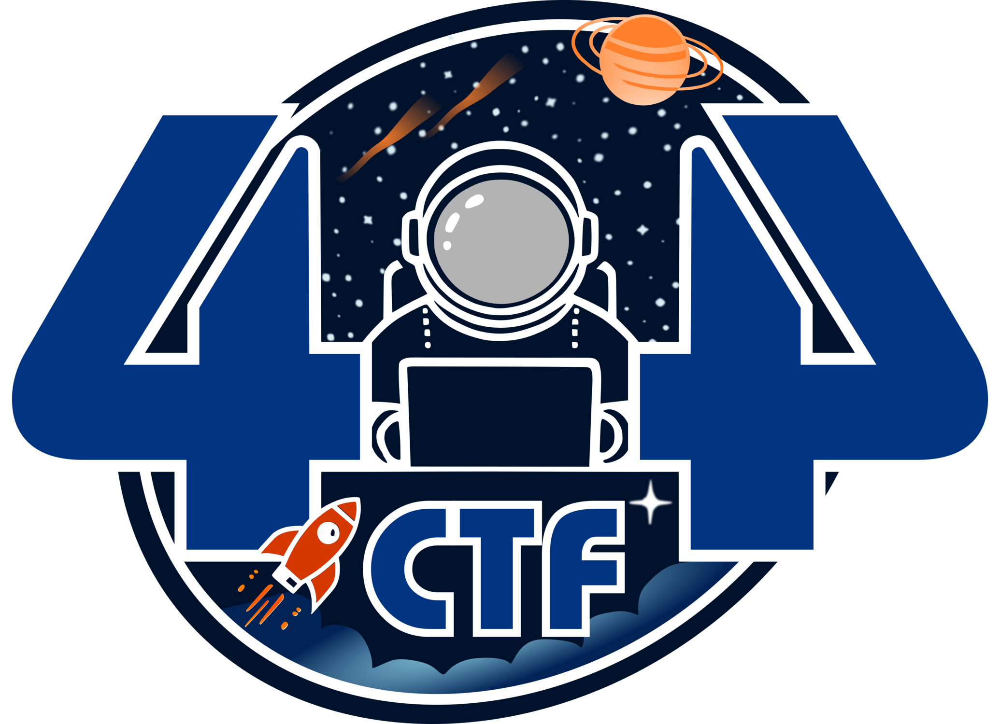

Site Web

un site web fictif dédié aux vacances.
.Ce projet permet d'explorer comment un site de ce genre pourrait aider les utilisateurs à planifier leurs vacances de manière simple et efficace.
un site web fictif dédié à la présentation de divers produits pour la maison
Ce projet vise à montrer comment un site de vente en ligne peut aider les utilisateurs à trouver facilement des meubles et des appareils électroménagers pour embellir leur intérieur.
Site web répertoriant les monuments importants au Mexique
Site Web de tourisme qui repertorient les monuments à Paris
Site web repertoriant les monuments historiques américains
Site web dédié à la présentation d'une pétition créer a partir des langages de balisages

Site vitrine (première version) pour une association de basketball réalisé pendant un stage (frontend : React , backend : Express.js
Application de gestion de tâches (to do list) développée avec JS, HTML , CSS avec le framework React
Site web de pétition créé avec Javascript, HTML, CSS et le framework React
Site web de réservation développé avec JavaScript et le framework React.
Site web de forum de discussion permettant aux utilisateurs d'échanger des idées et des opinions.
Site d'authentification incluant les fonctionnalités d'inscription, de connexion et de déconnexion.
Quiz sous forme de site web pour apprendre le langage de programmation Javascript

Site de pétition développé avec le langage PHP
Quiz sous forme de site web pour apprendre le langage PHP
Voici quelques site vitrine créé à partir des langages de balisage html et css.
Projets-Python

Générateur de mot de passe
Bot Itinéraire
Développement d’un bot Python capable de générer automatiquement des fiches produits Word à partir d’une liste de numéros SKU fournie dans un fichier Excel.
Le script récupère pour chaque produit les informations suivantes depuis un site web : titre, image, description, spécifications techniques et documentation PDF.
Il utilise les bibliothèques Playwright, openpyxl, requests et python-docx, et peut être réadapté à d'autres sites ou formats de fiche. Voir le projet sur Gumroad
Développement d'un script automatisé pour envoyer des notifications SMS à mon téléphone lors de la réception d'un e-mail, en utilisant les conseils et l'assistance de ChatGPT (Python, Tulio, ExchangeLib, PushBullet) (EN COURS)
Les Projets suivants ont été développés avec les langages de balisage et avec le langage python avec le framework Flask

Site web dédié à l'astronomie, développé avec HTML, CSS et Python en utilisant le framework Flask.
Pétition sous forme de site web développé
Quiz pour apprendre le langage informatique Python sous forme de site web
Système de reservation sous forme de site web
Site d'authentification incluant les fonctionnalités d'inscription, de connexion et de déconnexion.
Projets Système Embarqué

Conception d'un détecteur de luminosité portable utilisant un Arduino pour contrôler des LED et un buzzer en fonction de l'intensité de la lumière ambiante
Cybersécurité
Participations Capture The Flag (CTF)

404CTF (Université Télécom Sud Paris / DGSE / OVHcloud) - 10 mai au 1 juin 2025
Classement : 547ᵉ sur 2 893 participants (top 20 %)
OSINT – 404CTF
J’ai participé à 7 challenges OSINT dans le cadre de l’événement de cybersécurité 404CTF, organisé par l’Université Paris-Saclay, la DGSE et OVHcloud.
Ces épreuves m’ont permis d’exercer mes compétences en investigation numérique, en mobilisant des outils et méthodes variés, parmi lesquels :
- Recherche d’informations sur les réseaux sociaux
- Utilisation de SunCalc pour estimer l’heure et la date de prise de vue d’une photo
- Analyse d’articles de presse pour extraire des données contextuelles
- Consultation de rapports d’accidents aériens pour localiser un crash (challenge "Heart Attack")
- Géolocalisation avancée et recherche commerciale pour identifier le restaurant le plus éloigné de la station spatiale de Kourou et obtenir le prix d’une boisson (challenge "Addition Salée")
- Identification d’oiseaux à partir d’un enregistrement audio afin de confirmer une localisation en Guyane (flag : Lamprospiza melanoleuca) (utilisation de l'application mobile BirdNet pour l'identification d'oiseaux)
* Les write-ups détaillés sont disponibles sur demande.
Sécurité Web – 404CTF
J’ai résolu plusieurs challenges portant sur la sécurité des applications web, qui m’ont permis de pratiquer l’exploitation de vulnérabilités courantes dans un environnement contrôlé.
Parmi les failles exploitées :
- JWT falsification : manipulation de jetons d’authentification JSON Web Token pour contourner les mécanismes de vérification d’identité Write Up
- Path Traversal : exploitation d’une faille de navigation dans l’arborescence du système de fichiers pour accéder à des fichiers sensibles ou protégés Write Up
Ces challenges m'ont permis de renforcer ma compréhension du fonctionnement des applications web côté serveur, des erreurs de configuration courantes et de l’impact des mauvaises pratiques de sécurité dans la gestion des données et des accès.
Analyse Forensique - 404CTF Résolution d'un challenge en analyse forensique portant sur l’exfiltration de données via un périphérique USB à partir d’un fichier de capture réseau au format .pcapng.
Étapes clés de l’analyse :
- Ouverture du fichier avec Wireshark et application d’un filtre usb pour cibler les communications USB
- Identification de paquets URB Bulk OUT contenant des données suspectes via le champ Leftover Capture Data
- Extraction des données brutes depuis ces paquets en les exportant au format binaire (.bin) pour conserver l'intégrité des octets
- Conversion du contenu binaire en texte pour révéler le flag
Write Up
Sécurité Matérielle - 404CTF Dans ce challenge, j’ai dû reconstruire un signal audio à partir d’un fichier IQ (chall.iq) contenant des données complexes issues d’une transformée de Fourier.
L’objectif était de restaurer le signal temporel d’origine afin de l’écouter et de retrouver le flag audio.
Étapes principales :
- Chargement des données IQ (nombres complexes) avec numpy
- Application de l’IFFT (Inverse Fast Fourier Transform) pour repasser du domaine fréquentiel au domaine temporel
Traitement du signal :
- Extraction de la partie réelle
- Normalisation puis conversion en int16
- Sauvegarde du signal au format .wav (44100 Hz) à l’aide de scipy.io.wavfile.write
- Écoute du fichier reconstruit pour identifier le flag audio
Ce challenge m’a permis de découvrir le traitement du signal, en particulier les concepts de FFT/IFFT.
Bien que guidé à 70% dans la démarche, j’ai pris soin de comprendre chaque étape, ce qui m’a donné une base solide pour appréhender la manipulation de signaux numériques. Write Up
TryHackMe (Plateforme d'apprentissage en cybersécurité offensive) Mai 2025 - En cours
TryHackMe Bounty Hacker (niveau : Facile)
- Reconnaissance : Scan Nmap
- utilisation protocole FTP pour récupérer un fichier "à distance" task.txt, pour identifier un user
- Brute-force SSH : outil utilisé: Hydra pour trouver un mot de passe
- Connexion SSH : accès à l’utilisateur
- Privesc (Privilege Escalation) : sudo -l exécution autorisée de tar sans mot de passe
- Élévation de privilèges
- Objectif final : lecture du flag root.txt
Compétences acquises : scan réseau NMAP, FTP, brute-force SSH, privilege escalation
* write-ups détaillé disponible sur demande
TryHackMe Basic Pentesting (niveau : Facile)
- Reconnaissance : Scan Nmap pour identifier les services actifs (HTTP, SSH, SMB)
- Web Enumeration : découverte d’un dossier caché avec Gobuster, puis récupération d’infos
- Enumération SMB : enum4linux utilisé pour identifier des utilisateurs
- Brute-force SSH : Hydra utilisé avec la wordlist rockyou.txt pour trouver un mot de passe d'un utilisateur
- Connexion SSH : Pour accèder aux utilisateurs
- linPEAS : utilisé pour détecter la présence d’une clé privée SSH appartenant à un autre utilisateur , (l'outil linPEAS a montré un point d’entrée potentiel vers un autre utilisateur, en trouvant une clé SSH mal sécurisée)
- Brut Force Attack : cassé la clé de chiffrement RSA pour obtenir un hash et convertir ce hash en un mot de passe plus lisible avec JohnTheRipper
Compétences acquises :
- Nmap (scan réseau et détection de services)
- Gobuster (brute-force de répertoires web)
- enum4linux(pour l'identification des utilisateurs)
- brute-force SSH avec Hydra,
- linPEAS (énumération locale avancée pour détecter des failles, fichiers sensibles ou clés SSH exploitables)
- JohnTheRipper (pour le déchiffrement)
- * l'élévation de privilèges a été possible grâce a l'outil linPeas qui a localisé une clé SSH exploitable et grâce a l'outil JohnTheRipper qui a converti la clé RSA en un hash et qui a cassé le hash dans le but d'obtenir un mot de passe lisible
* write-ups détaillé disponible sur demande
Mes Certifications
certifications en python

Responsive design html et css

Réseau Informatique
SQL
Intro à la Cybersécurité
Formation en Développement Web avec Flask (Plateforme : Alison Free Courses)
Diplôme délivré par la plateforme Alison (non reconnu par l’État)